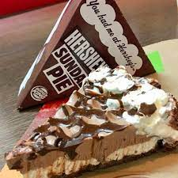

Sundae Pie

Description
The Burger King Hershey’s sundae pie is a decadent dessert that tastes almost like a cross between a chocolate pie and ice cream.
It has two beautiful layers – cream cheese and vanilla at the bottom, and chocolate mousse on top.
Finished with whipped cream and chocolate shavings, this pie is every chocolate lover’s dream.
As it is a no-bake recipe, even non-experienced bakers can easily pull this off. It’s literally as easy as pie.
Ingredients
- Chocolate Wafer Crust
- Cream Cheese Layer made of:
- Powdered Sugar
- Cool Whip
- Vanilla Extract
- Chocolate Layer made of:
- Instant Chocolate Pudding Mix
- Milk
- Cool Whip and Chocolate Chips
Steps
- In a large, metal bowl, add the heavy whipping cream and powdered sugar.
- Beat them together at low speed for 1 minute. Gradually increase the speed to high and beat for 4 more minutes, or until stiff peaks form.
- Refrigerate the mixture until ready to use.